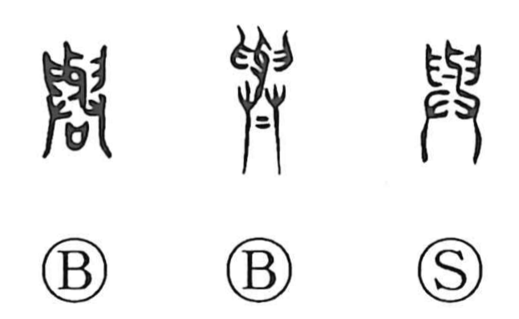

Explanation
The character’s original form is 與, built by combining 与—probably depicting a pair of ivory tusks—with the hand graphs 臼 and 廾, each showing a pair of hands. 與 thus portrays four hands lifting and carrying precious goods such as ivory. From this image of jointly bearing a load arise senses of acting together—participating, sharing, keeping company—and, by extension, transferring something to another place, hence to give. Related forms illuminate the scene: 輿 shows hands at the four corners carrying a hand-cart, while 興 shows a wine vessel held with both hands, supported from below by two more, pouring a libation to rouse the spirits of the earth. In this light, 與 itself reflects a rite of bestowal or granting, which also underlies uses like 関与 and 与聞, where the sense is to take part or be concerned.